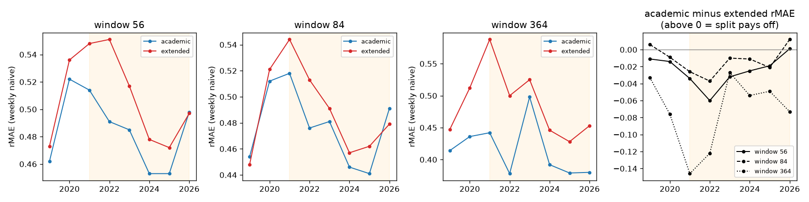

Feature ablation: academic vs extended exog, 2019-2026
Generated 2026-08-11T08:18:47+00:00. Test horizon 2019-01-01 to
2026-07-29 on our dataset, daily recalibration. academic = load forecast + one aggregate
RES forecast (Lago-style pair); extended = load + wind onshore/offshore + solar split.
Pre-registered hypothesis (day 3, after the split lost on 2016-2017 in
lear_same_horizon): the split should start paying
off in the post-2021 high-RES regime (shaded).
| window | exog | overall rMAE | 2019 | 2020 | 2021 | 2022 | 2023 | 2024 | 2025 | 2026 |
|---|
| 56 | academic | 0.484 | 0.462 | 0.522 | 0.514 | 0.491 | 0.485 | 0.453 | 0.453 | 0.498 |
| 56 | extended | 0.519 | 0.473 | 0.536 | 0.548 | 0.551 | 0.517 | 0.478 | 0.472 | 0.497 |
| 84 | academic | 0.475 | 0.454 | 0.512 | 0.518 | 0.476 | 0.481 | 0.446 | 0.441 | 0.491 |
| 84 | extended | 0.496 | 0.448 | 0.521 | 0.544 | 0.513 | 0.491 | 0.457 | 0.462 | 0.479 |
| 364 | academic | 0.407 | 0.414 | 0.436 | 0.442 | 0.378 | 0.498 | 0.392 | 0.379 | 0.38 |
| 364 | extended | 0.492 | 0.447 | 0.512 | 0.588 | 0.5 | 0.525 | 0.446 | 0.428 | 0.453 |

Verdict: the pre-registered hypothesis is refuted. The
extended split does not pay off post-2021 — the academic aggregate wins nearly every
year at every window, and the gap is widest exactly where the split was supposed to help:
the volatile 2021-2022 years at window 364 (0.442 vs 0.588 and 0.378 vs 0.500). Only three
year/window cells go the other way, all by ≤0.012. Mechanism (post-hoc, untested): LEAR
multiplies each exog series into dozens of lagged/hourly features, so the split grows the
feature count ~60% with heavily collinear wind series; in a lasso that buys variance, and
volatile years price variance highest. Two consequences: (1) the point-forecast floor moves
from rMAE 0.492 to 0.407 — LEAR(364, academic exog) is the new baseline every later
model must beat; (2) the RES split is shelved for linear models — revisit it only in the
neural phase, where nonlinear interactions could in principle use it, as an explicit ablation
with this result as the prior.